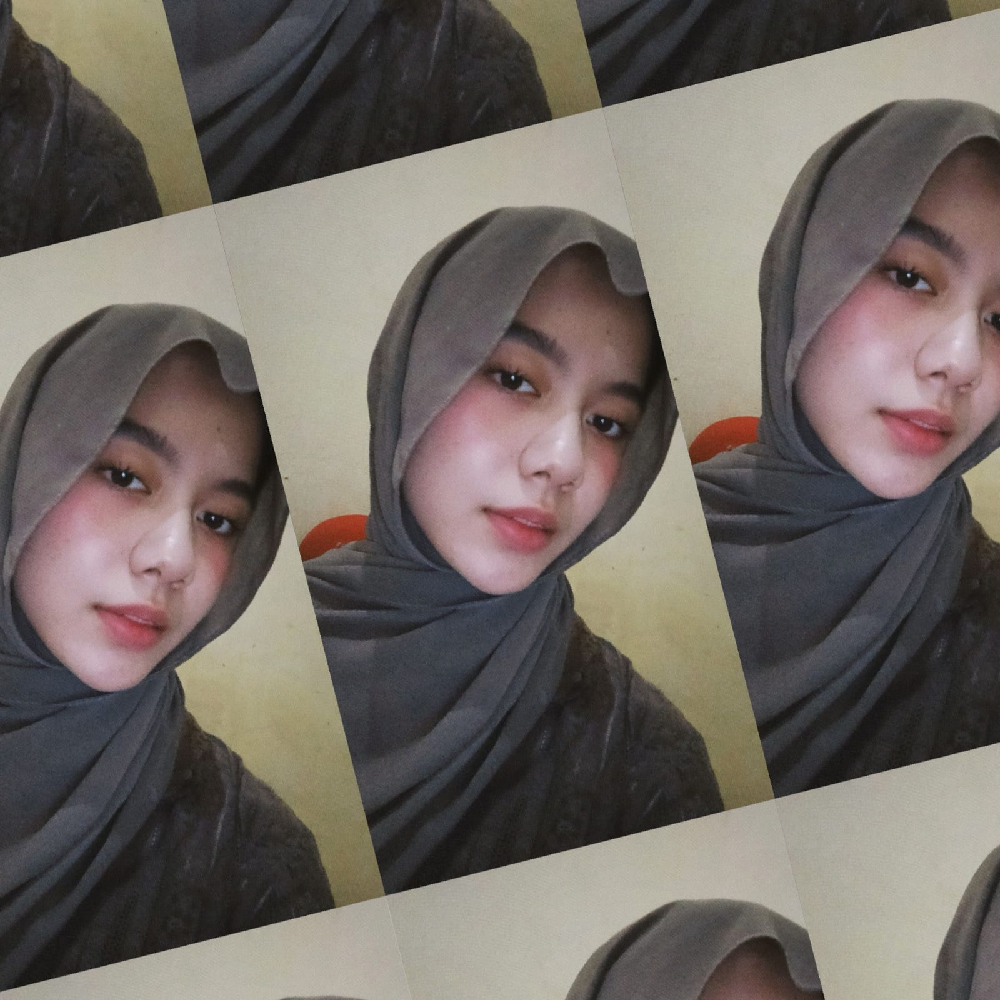

🤎
Portfolio Personal — Saybah
Website portfolio dengan tema coklat elegan, dan struktur kode yang dipisah ke HTML, CSS, dan JavaScript.
menyeduh portfolio...
Portfolio . 2026
UI/UX Developer · Mahasiswa Informatika, Universitas Satya Terra Bhinneka
Belajar membangun hal-hal yang indah dari baris kode — satu langkah kecil setiap harinya, seperti kupu-kupu yang perlahan membentuk sayapnya.🦋

Hai! Aku Nursaybah Kirani Br Sembiring, biasa dipanggil Saybah. Saat ini aku sedang menempuh semester 2 di jurusan Informatika, Universitas Satya Terra Bhinneka. Aku tertarik pada dunia UI/UX — karena bagiku, teknologi yang baik adalah yang terasa nyaman dan indah saat digunakan.
Desain adalah cara aku bercerita tanpa kata-kata — lewat warna, bentuk, dan ruang kosong yang justru punya makna. Setiap elemen yang aku susun adalah bagian dari cerita yang ingin aku sampaikan kepada siapa pun yang melihatnya.
Sebagai calon UI/UX Developer, aku menggabungkan kemampuan desain dan teknis berikut untuk membangun produk digital yang cantik sekaligus fungsional.
Wireframe, prototyping & UI design
Riset, layout & sistem desain
Desain grafis & konten visual
Rancangan alur & tampilan awal produk
Struktur halaman web semantik
Styling, animasi & layout responsif
Interaktivitas & logika frontend
OOP & logika pemrograman
Dasar logika & pemrograman
Perancangan & query database
Website portfolio dengan tema coklat elegan, dan struktur kode yang dipisah ke HTML, CSS, dan JavaScript.
Website sistem informasi konservasi orangutan yang dikerjakan bersama tim sebagai tugas kelompok. Menampilkan biodata orangutan dengan fitur pencarian data, halaman konservasi, dan laporan perlindungan habitat.
Aplikasi mobile untuk menghubungkan warga dengan layanan darurat Indonesia — Damkar (113), Ambulans (118/119), Polisi (110), dan SAR (115). Dikerjakan bersama tim sebagai tugas kelompok, mencakup desain antarmuka mobile, dashboard Super Admin, panel admin institusi, dan prototipe interaktif Figma.
Selalu masuk 3 besar di kelas, aktif berorganisasi sebagai Bendahara OSIS dan Sekretaris Kelas — awal mula belajar tanggung jawab dan kepemimpinan.
Tiga tahun mempertahankan ranking 1, menjabat sebagai Sekretaris Kelas, dan menjalani PKL selama 3 bulan di Enter Computer Binjai — pengalaman pertama terjun langsung ke dunia teknologi.
Sedang memperdalam dasar-dasar pemrograman, struktur data, dan pengembangan web — sambil terus mengeksplorasi sisi kreatif lewat desain antarmuka.
Terus belajar HTML, CSS, dan JavaScript untuk membangun proyek-proyek personal — salah satunya halaman yang sedang kamu lihat sekarang ini 🤎
Jatuh berkali-kali, bangkit lebih cepat.
Satu nada salah tidak merusak keseluruhan lagu.
Level up dalam game, skill up dalam coding.
Dari biji sederhana jadi sesuatu yang luar biasa.